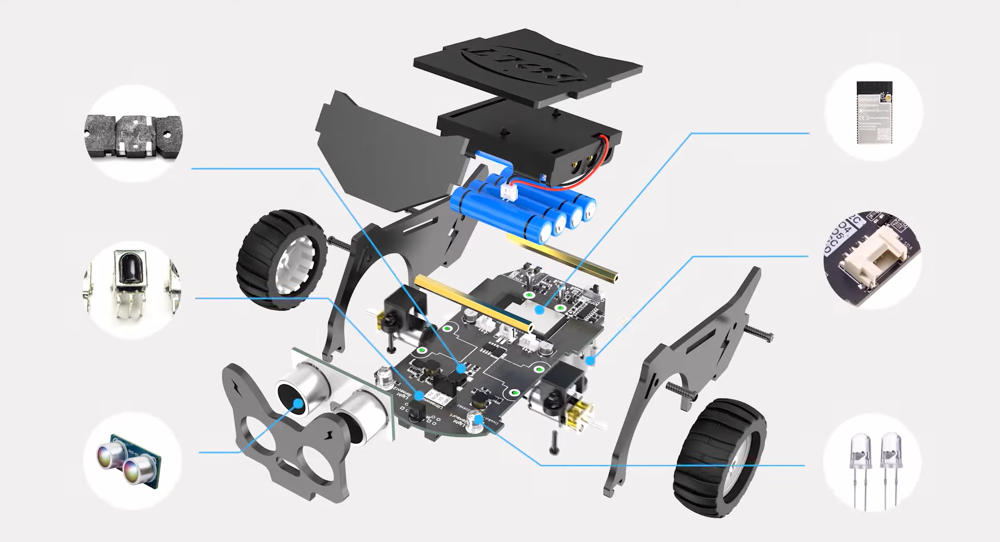

Arrastra cada parte a su lugar

Ultrasonic Distance Sensor
ESP32 Controller Module
IR Receiver / Receptor IR
Speaker / Altavoz
I2C Interface / Interfaz I2C
Enviar
¿Para qué sirve el sensor ultrasónico?
Mide distancia a objetos
Emite sonido
Controla motores
¿Cuál es el cerebro del robot?
Sensor IR
ESP32
Buzzer
¿Qué recibe señales infrarrojas?
Receptor IR
Sensor ultrasónico
I2C
¿Qué componente emite sonido?
ESP32
Altavoz
Sensor IR
¿Qué permite conectar módulos?
Interfaz I2C
Ultrasonido
Buzzer
¿Qué sensor se usa para seguir líneas?
Sensor infrarrojo
Ultrasónico
ESP32
Resultado